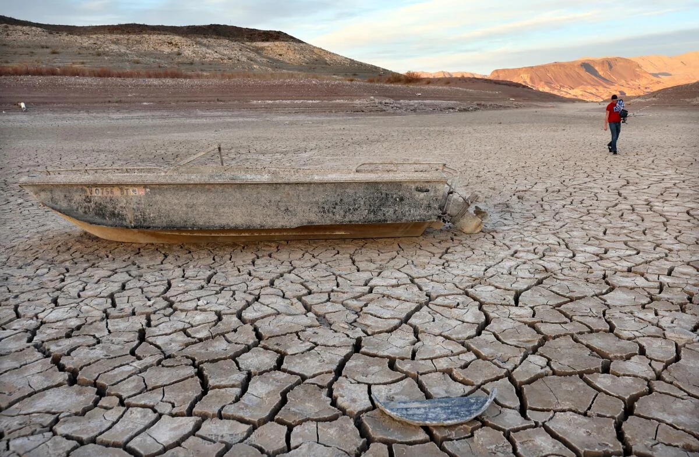
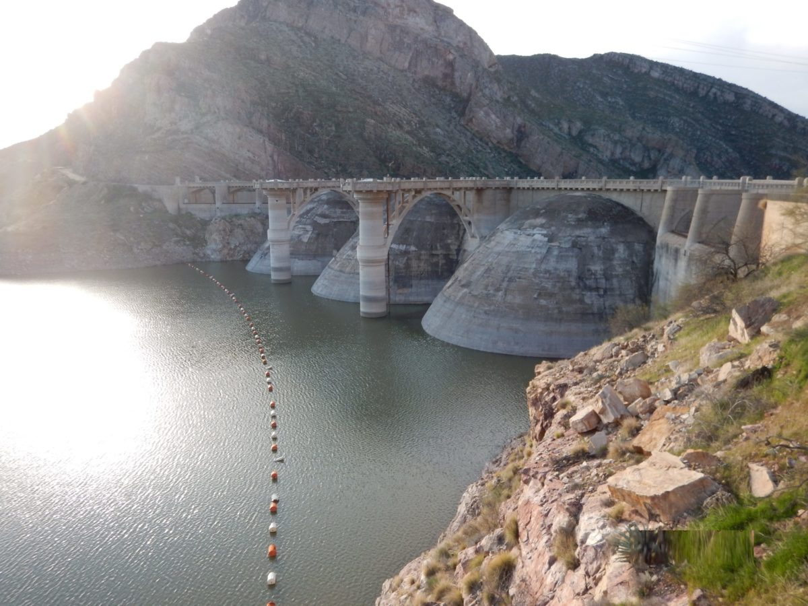
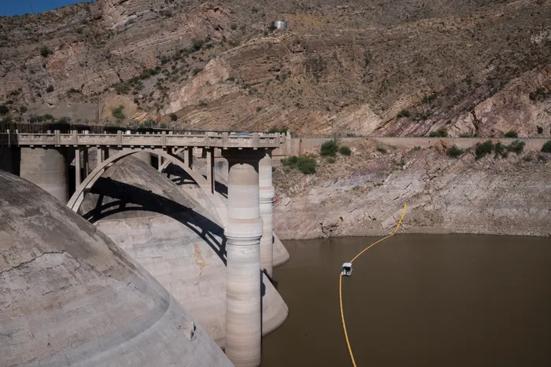
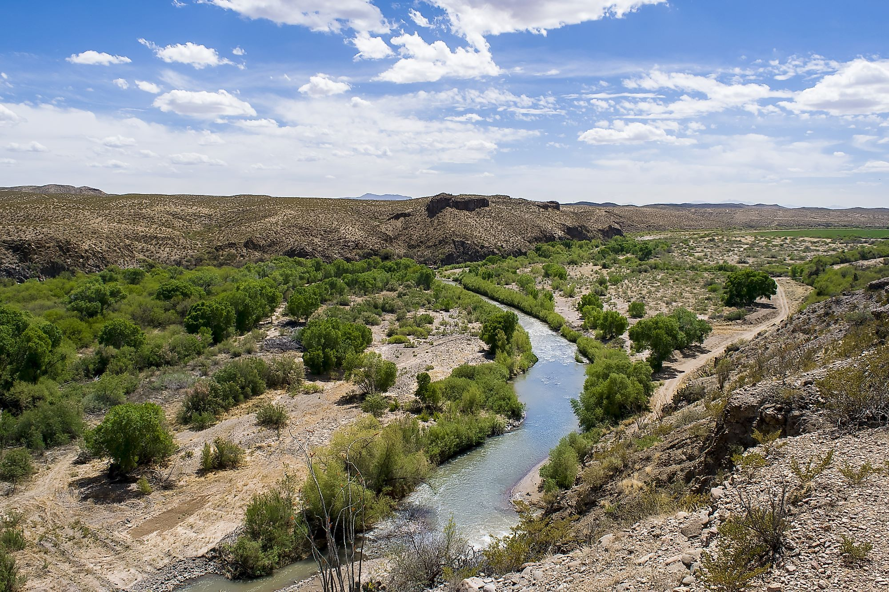
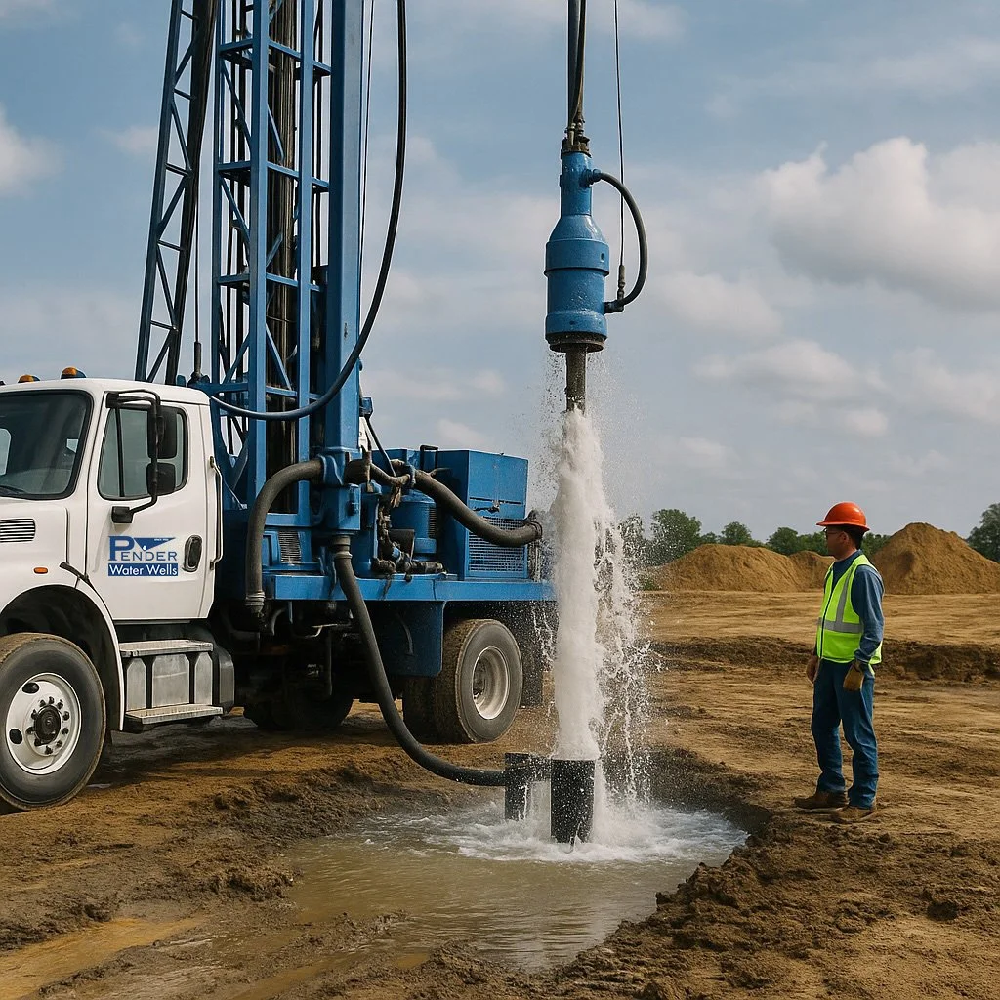

They said a town of 2,000 people couldn't fight a federal decree, a mega-drought, and a dying reservoir all at once. They were wrong. What's happening in Kearny right now isn't just a water crisis — it's the most unlikely survival story in the American Southwest. And it starts with one question: what do you do when the law says you can't drink the water flowing past your front door?
Arizona is in the grip of a mega-drought unprecedented in modern recordkeeping. Temperatures routinely exceed 115°F in the Kearny basin during summer months. That extreme heat doesn't just make life uncomfortable — it evaporates the water supply from the ground up.

Shallow alluvial aquifers — the sandy layers near the surface that Kearny's wells draw from — recharge through rainfall and river flow. But when temperatures run this hot for this long, evaporation outpaces recharge. The water table drops. Pumps spin in open air. And the taps go silent.
Kearny depends on a fragile chain of water sources — all connected to the Gila River system, all governed by the same 1935 decree, and all failing under drought conditions.
The sole reservoir supplying Kearny's allotment. Formed by Coolidge Dam on the Gila River. Maximum capacity: ~910,000 acre-feet. Has been nearly empty many times since 1928 — including below 100 acre-feet in 2021.
A 649-mile tributary of the Colorado River carrying snowmelt from New Mexico's mountains. Snow totals in the basin peaked at 25% of normal this year. The river that once carried enough water for steamboats now barely trickles.
Kearny pumps well water close to the Gila River. 21 wells within city limits, ranging from 54 to 1,250 feet deep. Most tap the alluvial (shallow) aquifer governed by the Globe Equity Decree.
Tributaries feeding the Gila River system upstream of Coolidge Dam. All experiencing record-low flows due to drought conditions across the watershed.
The reservoir has been on a devastating trajectory. From over 500,000 acre-feet in 2023, it has plunged to roughly 377 acre-feet by June 2026 — less than 0.05% of its ~910,000 acre-foot capacity. Its surface has dropped more than 13 feet since January 1, 2026 alone, and has fallen every month since peaking in March.
San Carlos Reservoir is an open lake with a surface that once spread across roughly 19,500 acres. In a basin where summer temperatures top 115°F, an open reservoir doesn't just lose water to use — it loses it straight to the sky. Every month, the gage drops. Every month, more of what's left evaporates off the top.
That is the entire argument for MARS — Managed Aquifer Recharge and Storage. Water banked 800+ feet underground in Kearny's granite vaults cannot evaporate. It is shielded from the sun, the heat, and the drawdown that is draining the reservoir in real time. The lesson of the falling lake is simple: stop storing water where the desert can steal it — and bank it where it stays put.


The drought alone would be manageable if Kearny had the legal right to pump what it needs. It doesn't. A 91-year-old federal consent decree — the Globe Equity Decree of 1935 — dictates who gets Gila River water and in what order. And Kearny is last in line.
The Globe Equity Decree was entered on June 29, 1935 in United States v. Gila Valley Irrigation District, Globe Equity No. 59. It identifies and quantifies every party's rights to Gila River mainstem water — listing priority dates, entitlement amounts, and associated lands. A court-appointed Gila Water Commissioner enforces it and can cut off noncompliant diversions.
Under the doctrine of prior appropriation — "first in time, first in right" — the entities who used the water first get served first during shortages. Kearny was incorporated in 1958, decades after the Decree was written. Its rights are junior to nearly everyone.
Sovereign tribal nation with the most senior water rights on the Gila. Their rights predate all others and are protected by both the Decree and federal trust obligations.
Granted intervention in 1990. The Decree allocates 6,000 acre-feet of prior right to the Tribe, with the U.S. acting in trust capacity.
Agricultural users in Pinal County. Even they received only 0.2 acre-feet per acre in 2026 — the lowest allotment in 47 years of farming.
Mining operations with established water rights predating Kearny. Their industrial water needs are factored into the Decree's allocation framework.
Agricultural users upstream with rights established before Kearny existed. The Decree lists their priority dates and entitlement amounts individually.
Last in line. When the dam runs dry, Kearny is the first to be cut off. In 2026, the allotment was slashed from about 610 acre-feet to just 77 — an 87% reduction.
The cruel irony: there will be water in the river this summer — flowing bank to bank past Kearny — but the town will have no legal right to touch it. As Mayor Stacy told KJZZ: "There will be water in the wells. We just won't have a legal right to use it."

On April 8, 2026, Mayor Curtis Stacy declared a Level 5 Water Emergency (5WE) under the authority of A.R.S. § 26-311. In his letter to residents, he wrote plainly: "We WILL run out of water on or about July 15, 2026."
That danger was pushed back — thanks to residents cutting usage by nearly a third (a 32.7% 7-day average). Then, in early June 2026, the Town secured temporary “priority water” from the Decree area and eased restrictions all the way down to Level 1WE — voluntary conservation. Per the Town's June 4, 2026 update, residents may again water lawns, wash vehicles, and fill pools. The Town has cautioned this is almost certainly temporary and can revert the moment a senior-rights holder calls for water.
Allowed again under Level 1WE. The Town asks residents to keep irrigation to a reasonable minimum.
Allowed under Level 1WE. The Town asks residents to refrain from washing driveways and sidewalks.
Pools, spas, and kiddie pools may be filled under Level 1WE.
Flush, shower, do laundry, keep the trees alive. Voluntary conservation is still encouraged — fix leaks and reuse grey water.
What does "Day Zero" look like — the scenario conservation and priority water have so far held off? You turn on your faucet and nothing comes out. No drinking water. No bathing. No cooking. No sanitation. No fire suppression. The grocery store's refrigeration compressors — cooled by water — shut down. Tens of thousands of dollars of perishable food spoils overnight.
Conservation buys time. But time isn't water. The long-term solution lies beneath Kearny's feet — in deep wells that already exist but have been sitting dormant, capped, or underutilized for decades.
The strategy is two-pronged: rehabilitate existing deep wells by relining their casings and restoring flow, and recapture grey water by injecting treated effluent back into the ground through Managed Aquifer Recharge and Storage (MARS) — building a water bank the town owns outright.
Kearny has 21 wells within city limits. Two of them — Sites 23CCC (1,250 ft) and 23CAA (1,150 ft) — punch through the shallow alluvial layer into fractured granite bedrock. These wells were built for high-volume production with 18-inch casing. Relining and reactivating them could restore thousands of gallons per minute of capacity.
Older wells degrade over time — casings corrode, screens clog, gravel packs compact. Well rehabilitation involves running a new liner inside the existing casing, cleaning screens, and restoring the well to original (or better) production capacity. The USDA has already funded rehabilitation of one well, expected online by July 2026 at 100+ GPM.
Right now, Kearny sends treated effluent downstream — for free. Under a MARS program, that water would be injected back into the aquifer through the deep wells, earning ADWR Long-Term Storage Credits. It's a water bank the town owns outright, recoverable on demand under ARS Title 45.
If the deep wells access percolating groundwater in fractured granite — water that sits below the alluvial layer the Globe Equity Decree governs — Kearny could establish new, independent water rights through prior appropriation. No senior claims. No allocation table. A completely separate legal water source.

Learn about Project 88 and the MARS strategy that could secure Kearny's water future.
Explore Project 88 →